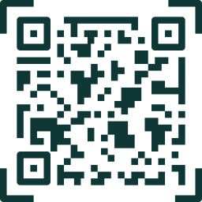

<ion-content *ngIf="!escanerActivado">
  <ion-fab vertical="top" horizontal="end" slot="fixed">
    <ion-fab-button class="fab-btn" (click)="logout()">
      <ion-icon name="log-out-outline"></ion-icon>
    </ion-fab-button>
  </ion-fab>

  <ion-fab horizontal="start" vertical="top" slot="fixed">
    <ion-fab-button class="fab-btn">
      <ion-icon name="trash-outline"></ion-icon>
    </ion-fab-button>
    <ion-fab-list side="end">
      <ion-fab-button class="limpiarCreditos" (click)="limpiarCreditos()">
        Limpiar créditos
      </ion-fab-button>
    </ion-fab-list>
  </ion-fab>

  <div class="contenedor-creditos">
    <div class="card-creditos">
      <h1>Crédito:</h1>
      <span [style.visibility]="credito != null ? 'visible' : 'hidden'">
        ${{credito}}
      </span>
      <ion-spinner
        *ngIf="credito == null"
        name="lines"
        color="light"
        class="spin"
      ></ion-spinner>
    </div>
  </div>
  <div class="contenedor-scanear">
    <div class="card-scanear" (click)="startScanner()">
      <span>Escanear</span>
      
    </div>
  </div>
</ion-content>
<div *ngIf="escanerActivado" class="scanner-ui">
  <div class="linea"></div>
</div>
